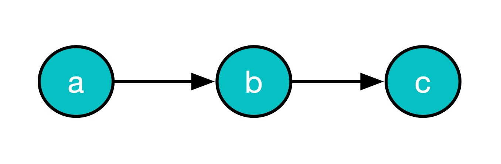
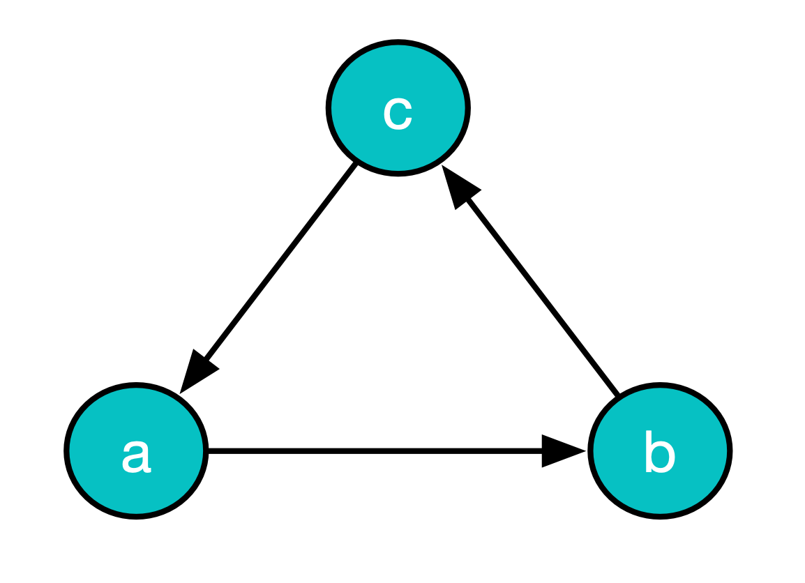

Class ImGraph<KEY,DATA,LABEL>
- All Implemented Interfaces:
HasTextBox,Values,Serializable
A graph (in the "standard" Computer Science Graph Theory sense).
We would have liked to just rattle-off the properties of the types of graph that this implementation supports and move on with our lives - but, on reflection we feel that the terminology is not completely standard so let's spend some time defining exactly what a graph is and some related terms.
Directed graph
Many authors define a graph by starting with a directed graph like this:
A directed graph or (digraph) is a pair G = (V, A) where
•
vis a set of vertices (or nodes), and• A ⊆
v×vis a set of directed edges (or arcs).
So these authors use node/vertex (and edge/arc) interchangeably. Other outhors reserve node and arc for directed graphs ans vertx edge for undirected graphs.
For now, we will use vertex and edge.
Note that this definition considers the vertices and the edges to be in a set .
A practical implementation of a graph in Java will have to decide if a graph can contain
-
any user-defined object as a vertex or
-
it will define the type of the vertex in some way.
For example
Set
s and
ImSet
s can contain objects that have
reasonable implementations of hashCode() and equals(). Should graph implementations impose the same restriction?
ImGraph
takes the second approach. To create a vertex in an
ImGraph
you have to supply a key - which must be a "well behaved object" with respect to belonging
to a set. However, you can associate any object you want with
each key. It does not need to be well-behaved.
Each edge,
a
, can be written like this:
a = (u, v)
where
u
and
v
are vertices and
a
is a pair - which implies an order to each component.
a
is said to be
incident on
u
and
v
- also
a
connects
a
and
v
and, furthermore, to be
incident from
u
and
incident to
v
.
Equivalently we say
a
leaves
u
and
enters
v
.
u
is called the
in vertex
for
a
and
v
is the
out vertex
.
Undirected graph
Authors then describe an undirected graph by stating that, in an undirected graph, the edges are unordered pairs.
To indicate this fact we can write an unordered edge
e
like this
e = {u, v}
where
{u, v} == {v, u}
e
is said to be
incident on
u
and
v
.
Mathematical graph definitions (as opposed to Computer Science definitions) tend to specify that a graph is a non empty set of vertices.
After this, authors tend to disagree about what the fundamental properties are and what they are called but here are some commonly mentioned properties:
Labeled graph
A graph where each vertex has a
label
- that is simply some data. Note that each vertex in an
ImGraph
is uniquely specified by its key. Adding some data
to the vertex will not affect its key.
Edge-labeled graph
A graph where each edge has a label - Again this is simply some data. The idea here is that the label is an enumeration - to indicate a category/set/type that can be used to identify different types of edges.
Edge-weighted graph
A graph where each edge(AKA edge) has some data associated with it. This data tends to be different in purpose from a label - usually a value (rather than an enumeration) that can be used in graph algorithms.
Self-loop
A graph that can have an edge that connects a vertex to itself. This property is considered to only be available for directed graphs.
Adjacency
A vertex
u
is
adjacent
to vertex
v
iff:
-
there exists an edge
(u, v)(in a directed graph) -
there exists an edge
{u, v}(in an undirected graph - recall that {u, v} == {v, u})
The adjacent vertices of a vertex are called its neighbours .
Paths
A path is a non empty list of edges/edges:
[ (a, b), (b, c), (c, d) ... (x, y) ]
Where the out vertex of each edge is the in vertex of the next edge in the list.
If the edges are not directed then a path is a list of edges where each edge can be written as an ordered pair such that the second vertex of each pair is the first vertex of the next pair in the list.
For a directed graph that allows self loops we can have a path that just has one edge in it - and therefore one vertex.
The length of a path is the number of edges in it.
A path's edges will define a list of vertices - by taking the first vertex in each pair and finally adding the second vertex of the last pair. We say that the path contains those vertices and each vertex is in the path . We may have vertices repeated in this list.
A path is simple if all its vertices are distinct.
For an undirected graph, a path must contain at least two vertices (because self-loops are not allowed).
Reachability
If there exists a path whose first vertex is
u
and whose last vertex is
v
then we say that
v
is
reachable
from
u
.
Cyclic/acyclic graph
A cycle is a path where its first and last vertex are equal.
A cyclic graph is one that contains one or more cycles. An acyclic graph is one that has no cycles.
Connected
For an undirected graph, if all of the vertices are reachable from each other, the graph is connected , otherwise it is disconnected .
For a directed graph we use the term strongly connected for this property.
The ImGraph properties
Ok - finally - we can describe this
ImGraph
implementation.
An ImGraph represents a graph that:
-
is directed
-
is labeled
-
is edge-labeled
-
can have cycles
-
can be disconnected
-
can be empty - ie have no nodes
This means that you can't represent an undirected graph ... er .. directly.
All the functions have names that use node/arc rather than vertex/edge.
Graphs are immutable - each time you add a node or an arc between two nodes, a new graph is created.
The
show()
method returns a text representation of the graph in the form of an ascii art diagram.
This is an example of a graph with edges labelled
art
or
mod
(and its ascii-art diagram):

References
- See Also:
-
Nested Class Summary
Nested ClassesModifier and TypeClassDescriptionstatic enumThe direction of an arc in a graph with respect to a node. -
Method Summary
Modifier and TypeMethodDescriptionAdd an arc with labellabelfromstarttoendAdd a node with keykeywith datavalue.addNodeIfMissing(KEY key, DATA value) Add a node with keykeywith datavalueIf a node with keykeyalready exists then return the original graph.addNodeToParentIfMissing(LABEL arcLabel, KEY parentKey, KEY childKey, DATA childValue) Add a node with keychildKeyand datachildValueand add an arc with labelarcLabelfrom the node with keyparentKeyto the new node If a node with keykeyalready exists then return the original graph.arcs()A list of all the arcs in the graphbooleancontainsNodeWithKey(KEY key) trueif the graph contains a node with keykeystatic <KEY,DATA, LABEL>
ImGraph<KEY,DATA, LABEL> empty()The singleton empty graph.getAdjacents(ImGraph.Dir dir, ImSet<LABEL> labels, KEY key) Get the keys that are connected tokeyby arcs in the directiondirthat have a label contained inlabelsgetAdjacents(ImGraph.Dir dir, KEY key) Get the set of nodes that are connected to the node with keykeyby any arcs in the directiondirgetAdjacents(ImGraph.Dir dir, LABEL label, KEY key) Get the keys that are adjacent tokeyby arcs in the directiondirthat have the labellabelgetArcs(ImGraph.Dir dir, KEY key) The arcs in the directiondiron the nodekeyThe closure ofcandidateswith respect to the functionadjacentFngetClosure(ImGraph.Dir dir, ImSet<LABEL> labels, KEY key) Get the closure of node with keykeyin the directiondirfollowing the arcs with labels in the setlabelsgetClosure(ImGraph.Dir dir, KEY key) Get the closure of node with keykeyin the directiondirfollowing all arcsgetClosure(ImGraph.Dir dir, LABEL label, KEY key) Get the closure of node with keykeyin the directiondirfollowing arcs with labellabelA representation of the graph in GraphViz format.getNames()The field names for this object including fields from superclasses.getPairs(ImGraph.Dir dir, KEY key) Get the arcs in the directiondirfromkeyin the form of pairs containing the arc label and the keygetPaths(ImGraph.Dir dir, ImSet<LABEL> labels, KEY key) Get the paths of the keys that are connected tokeyby arcs in the directiondirthat have a label contained inlabelsThe first entry in each path is keyThe data value associated with the node with keykeyThe field values for this object including fields from superclasses.getValuesFromKeys(ImList<KEY> keys) The list of data values associated with the nodes whose keys are inkeyThere might be repeated values in the list.booleanhasCycle()trueiff any of the nodes in the graph have cycles.keys()A list of all the keys in the graphkeysSet()A set of all the keys in the graphleaves()The nodes that have no outgoing arcs.The graph that has the same nodes and arcs as the original but with each data value for each node transformed byfnstatic <KEY,DATA, LABEL>
ImGraph<KEY,DATA, LABEL> on()The singleton empty graph.Remove the arc with labellabelfromstarttoendremoveNode(KEY key) Remove the node with keykeyIf the node is connected to another node then throwNodeHasNeighbours.removeNodes(ImSet<KEY> keys) Remove all the nodes inkeys.roots()The nodes that have no incoming arcs.show()The text-box representation of the graph in an "ascii-art" formshrinkToInclusiveClosureOf(ImSet<LABEL> labels, ImList<KEY> ks) Ifiks= the union of the closure ofksandksthen this function returns the graph that has nodes that areiksand any arcs that are incident on nodes iniksA list of keys in topological order with respect toadjacentFnstarting fromstartNodes.A list of keys in topological order with respect toadjacentFnstarting fromstartNode.values()A list of all the data values in the graphMethods inherited from class dev.javafp.val.ImValuesImpl
equals, getTextBox, hashCode, toStringMethods inherited from interface dev.javafp.val.Values
defaultEquals
-
Method Details
-
shrinkToInclusiveClosureOf
If
iks= the union of the closure ofksandksthen this function returns the graph that has nodes that areiksand any arcs that are incident on nodes iniks -
getValues
The field values for this object including fields from superclasses. SeeValuesandImValuesImpl -
getNames
The field names for this object including fields from superclasses. SeeValuesandImValuesImpl -
addNode
-
addNodeToParentIfMissing
public ImGraph<KEY,DATA, addNodeToParentIfMissingLABEL> (LABEL arcLabel, KEY parentKey, KEY childKey, DATA childValue) Add a node with key
childKeyand datachildValueand add an arc with labelarcLabelfrom the node with keyparentKeyto the new node If a node with keykeyalready exists then return the original graph. -
addNodeIfMissing
Add a node with key
keywith datavalueIf a node with keykeyalready exists then return the original graph. -
empty
The singleton empty graph. -
on
The singleton empty graph. -
containsNodeWithKey
trueif the graph contains a node with keykey -
addArc
Add an arc with label
labelfromstarttoend -
removeArc
Remove the arc with label
labelfromstarttoendIf
startorendis null then throwNullValue. If one or more of the nodes do not exist then throwKeyMissing. If no such arc exists then return the original graph, -
removeNode
Remove the node with key
keyIf the node is connected to another node then throwNodeHasNeighbours. -
removeNodes
Remove all the nodes in
keys.Remove any arcs incident on nodes.
if any node is connected to a node that does not belong to keys then throw
CantRemoveNodes -
getValue
The data value associated with the node with keykey -
roots
The nodes that have no incoming arcs.Returns a set of keys - although represented as a list.
-
leaves
The nodes that have no outgoing arcs.Returns a set of keys - although represented as a list.
-
hasCycle
public boolean hasCycle()trueiff any of the nodes in the graph have cycles. A cycle is a path from a node to itself that can be traced by following any arc on a node in the directionOut -
show
The text-box representation of the graph in an "ascii-art" form -
map
The graph that has the same nodes and arcs as the original but with each data value for each node transformed byfn -
getGraphVizGraph
A representation of the graph in GraphViz format. -
keys
A list of all the keys in the graph -
keysSet
A set of all the keys in the graph -
arcs
A list of all the arcs in the graph -
values
A list of all the data values in the graph -
getPairs
Get the arcs in the direction
dirfromkeyin the form of pairs containing the arc label and the key -
getClosure
Get the closure of node with key
keyin the directiondirfollowing arcs with labellabelReturns a set of keys - although represented as a list.
The list will *not* include the key
keyunless that node is in a cycle - in which case it *will* contain it -
getClosure
The closure of
candidateswith respect to the functionadjacentFn -
getAdjacents
Get the keys that are adjacent to
keyby arcs in the directiondirthat have the labellabelReturns a set of keys - although represented as a list.
-
getAdjacents
Get the keys that are connected to
keyby arcs in the directiondirthat have a label contained inlabelsReturns a set of keys - although represented as a list.
-
getClosure
Get the closure of node with key
keyin the directiondirfollowing the arcs with labels in the setlabelsReturns a set of keys - although represented as a list.
The list will not include the key
keyunless that node is in a cycle - in which case it will contain it -
getArcs
The arcs in the direction
diron the nodekey -
getPaths
Get the paths of the keys that are connected to
keyby arcs in the directiondirthat have a label contained inlabelsThe first entry in each path is key -
getClosure
Get the closure of node with key
keyin the directiondirfollowing all arcsReturns a set of keys - although represented as a list.
The list will not include the key
keyunless that node is in a cycle - in which case it will contain it
on the graph:getClosure(Out, "a")
will return the set:
{b, c}
on the graph:getClosure(Out, "a")
will return the set:
{a, b, c} -
getAdjacents
Get the set of nodes that are connected to the node with key
keyby any arcs in the directiondir -
getValuesFromKeys
The list of data values associated with the nodes whose keys are inkeyThere might be repeated values in the list. -
topologicalOrder
A list of keys in topological order with respect to
adjacentFnstarting fromstartNodes.This means:
If
ksis the returned list of keys then:for all arcs, (u,v) in this u appears before v in ks -
topologicalOrder
A list of keys in topological order with respect to
adjacentFnstarting fromstartNode.This means:
If
ksis the returned list of keys then:for all arcs, (u,v) in this u appears before v in ks
-